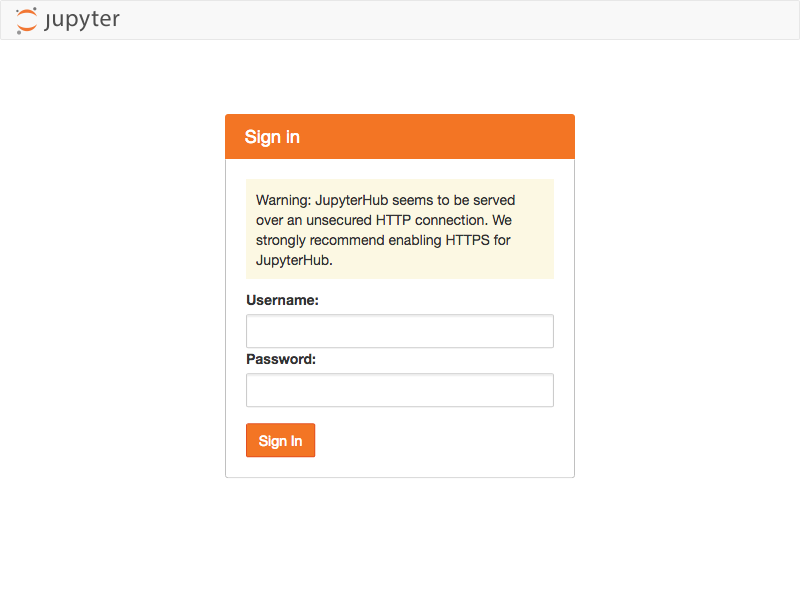

Install & Setup Basic JupyterHub¶
Here we setup a basic JupyterHub installation. At the end of this section you’ll have a running (but nonfunctional) JupyterHub server. Further sections will complete the install by integrating it with your cluster.
Create a user for running JupyterHub¶
Before installing anything, you’ll need to create the user account that will be
used to run JupyterHub. Here we’ll use jupyterhub:
$ adduser jupyterhub
Create directories to store JupyterHub Installation¶
A JupyterHub installation has three types of files which will need their own directories created before installation:
Software files. This includes a Python environment and all required libraries. Here we use
/opt/jupyterhub.Configuration files. Here we use
/etc/jupyterhub.Runtime files. By default this includes a sqlite database (can be configured to use other databases). Here we use
/var/jupyterhub.
# Software files
$ mkdir -p /opt/jupyterhub
# Configuration files
$ mkdir /etc/jupyterhub
# Runtime files
$ mkdir /var/jupyterhub
$ chown jupyterhub /var/jupyterhub
Install a private python environment¶
To avoid interactions between the system python installation and JupyterHub, we’ll install a full Python environment into the software directory. The easiest way to do this is to use miniconda, but this isn’t a strict requirement.
$ curl https://repo.anaconda.com/miniconda/Miniconda3-latest-Linux-x86_64.sh -o /tmp/miniconda.sh
$ bash /tmp/miniconda.sh -b -p /opt/jupyterhub/miniconda
$ rm /tmp/miniconda.sh
We also recommend adding miniconda to the root user’s path to ease further
commands.
$ echo 'export PATH="/opt/jupyterhub/miniconda/bin:$PATH"' >> /root/.bashrc
$ source /root/.bashrc
Install JupyterHub¶
Now we can install JupyterHub and its dependencies. Since JupyterHub has many
configuration options, we’ll only install the basic jupyterhub application
for now - further steps will add more packages later on.
$ conda install -c conda-forge jupyterhub -y
Configure JupyterHub¶
Now we’re ready to configure our basic JupyterHub installation and get things
running to see if everything works. JupyterHub configuration is written as a
Python file (typically /etc/jupyterhub/jupyterhub_config.py). Here we’ll
configure only a few fields:
JupyterHub.bind_url: the public facing URL of the whole JupyterHub application.JupyterHub.db_url: the address that the JupyterHub database can be reached at. JupyterHub supports many databases - for now we’ll use sqlite. For information on using a different database see the JupyterHub docs.JupyterHub.cookie_secret_file: the location to store the cookie secret. There are other options for setting the cookie secret, but saving a secret token to a file in a secure location is a good default option. See the JupyterHub docs for more information.
Create the cookie secret file and change permissions so only the jupyterhub
user has access.
$ openssl rand -hex 32 > /etc/jupyterhub/jupyterhub_cookie_secret
$ chmod 600 /etc/jupyterhub/jupyterhub_cookie_secret
$ chown jupyterhub /etc/jupyterhub/jupyterhub_cookie_secret
Save the following configuration to /etc/jupyterhub/jupyterhub_config.py:
c.JupyterHub.bind_url = 'http://:<PORT-TO-USE>'
c.JupyterHub.cookie_secret_file = '/etc/jupyterhub/jupyterhub_cookie_secret'
c.JupyterHub.db_url = 'sqlite:////var/jupyterhub/jupyterhub.sqlite'
Open JupyterHub Port¶
For users to access JupyterHub, they’ll need access to the port set in
JupyterHub.bind_url above. How to open this port is system specific and is
left as an exercise for the reader.
Start JupyterHub and check that it’s accessible¶
At this point you should be able to start JupyterHub as the jupyterhub user
using your created configuration file. The JupyterHub process will be a long
running process - how you intend to manage it (supervisord, etc…) is
system specific. The requirements are:
Start with
jupyterhubas the userStart with
/var/jupyterhubas the working directoryAdd
/opt/jupyterhub/miniconda/binto pathSpecify the configuration file location with
-f /etc/jupyterhub/jupyterhub_config.py
For ease, we recommend creating a small bash script stored at
/opt/jupyterhub/start-jupyterhub to set this up:
#!/usr/bin/env bash
export PATH="/opt/jupyterhub/miniconda/bin:$PATH"
cd /var/jupyterhub
jupyterhub -f /etc/jupyterhub/jupyterhub_config.py
For testing here’s how you might start JupyterHub manually:
$ cd /var/jupyterhub
$ sudo -iu jupyterhub /opt/jupyterhub/start-jupyterhub
Things won’t work yet (more configuration is still needed), but you should at least have access to a web page.
In the next section we’ll configure spawners and authentication to get things fully working.

{kind=link}